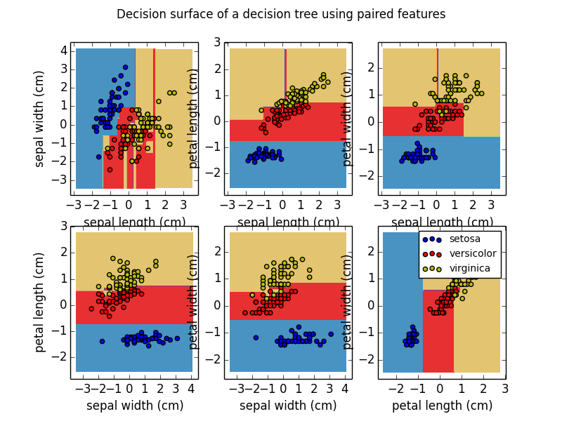

Plot the decision surface of a decision tree on the iris dataset¶
Plot the decision surface of a decision tree trained on pairs of features of the iris dataset.
See decision tree for more information on the estimator.
For each pair of iris features, the decision tree learns decision boundaries made of combinations of simple thresholding rules inferred from the training samples.
Python source code: plot_iris.py
print(__doc__)
import numpy as np
import pylab as pl
from sklearn.datasets import load_iris
from sklearn.tree import DecisionTreeClassifier
# Parameters
n_classes = 3
plot_colors = "bry"
plot_step = 0.02
# Load data
iris = load_iris()
for pairidx, pair in enumerate([[0, 1], [0, 2], [0, 3],
[1, 2], [1, 3], [2, 3]]):
# We only take the two corresponding features
X = iris.data[:, pair]
y = iris.target
# Shuffle
idx = np.arange(X.shape[0])
np.random.seed(13)
np.random.shuffle(idx)
X = X[idx]
y = y[idx]
# Standardize
mean = X.mean(axis=0)
std = X.std(axis=0)
X = (X - mean) / std
# Train
clf = DecisionTreeClassifier().fit(X, y)
# Plot the decision boundary
pl.subplot(2, 3, pairidx + 1)
x_min, x_max = X[:, 0].min() - 1, X[:, 0].max() + 1
y_min, y_max = X[:, 1].min() - 1, X[:, 1].max() + 1
xx, yy = np.meshgrid(np.arange(x_min, x_max, plot_step),
np.arange(y_min, y_max, plot_step))
Z = clf.predict(np.c_[xx.ravel(), yy.ravel()])
Z = Z.reshape(xx.shape)
cs = pl.contourf(xx, yy, Z, cmap=pl.cm.Paired)
pl.xlabel(iris.feature_names[pair[0]])
pl.ylabel(iris.feature_names[pair[1]])
pl.axis("tight")
# Plot the training points
for i, color in zip(range(n_classes), plot_colors):
idx = np.where(y == i)
pl.scatter(X[idx, 0], X[idx, 1], c=color, label=iris.target_names[i],
cmap=pl.cm.Paired)
pl.axis("tight")
pl.suptitle("Decision surface of a decision tree using paired features")
pl.legend()
pl.show()
Total running time of the example: 0.46 seconds ( 0 minutes 0.46 seconds)